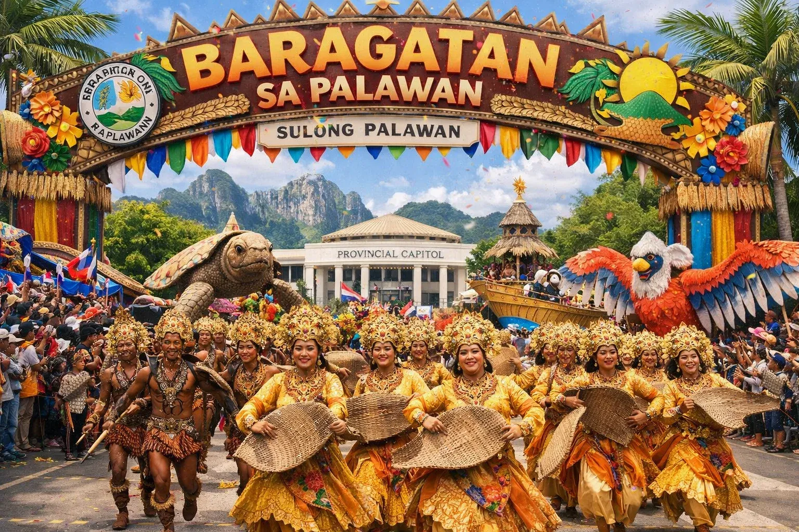
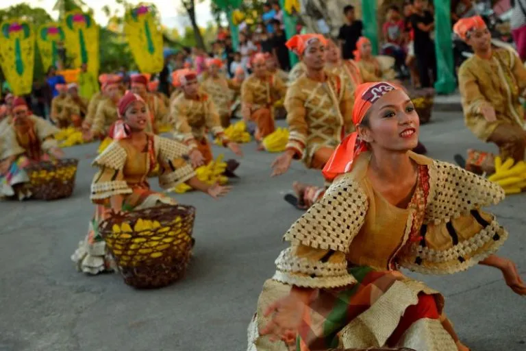
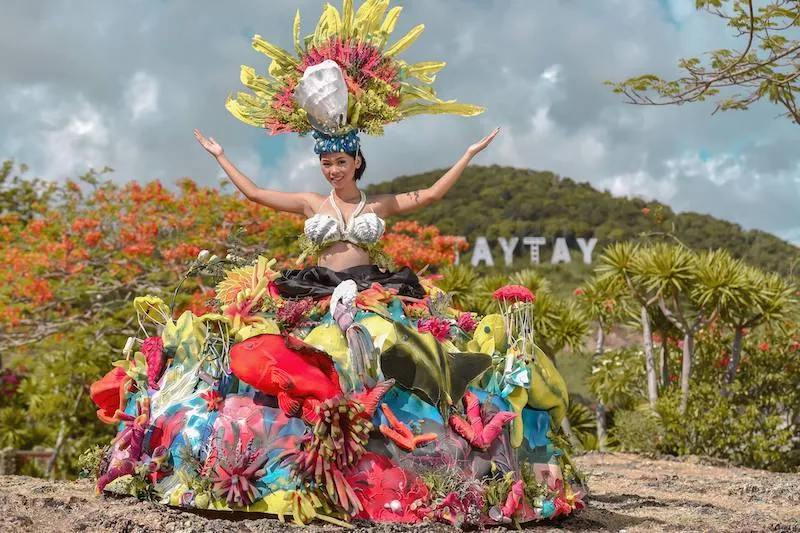

Festivals & Culture
Celebrate the living traditions of Palawan
Celebrate the living traditions of Palawan

JuneThe Baragatan Festival is Palawan's grand provincial celebration, held every June in Puerto Princesa City. "Baragatan" means "trade fair" in Cuyonon, reflecting the festival's origins as a gathering of Palawan's diverse communities. The week-long event features street dancing competitions, cultural shows, trade fairs, agricultural exhibits, indigenous arts demonstrations, and beauty pageants. Tribes from across the province converge to share their traditions, music, and crafts. It is the best opportunity to see all of Palawan's cultural diversity in one place.
 March
MarchThe Kulambo Festival is an annual celebration held in the town of El Nido, one of the most famous and unique islands in Palawan province. The festival takes place from March 15th to 18th and features participants in eye-catching costumes made of kulambo, or mosquito nets, during the street parade.

JanuaryArawedan Festival The Arawedan Festival is an exciting celebration that takes place annually from January 23 to January 24 in the charming coastal town of Port Barton in the Municipality of San Vicente, Palawan. This festival is a vibrant showcase of the numerous tourist attractions in the municipality, including its stunning beaches, breathtaking marine reserves, and verdant parks.

MayThe Pasinggatan Festival is a vibrant celebration held every year from May 1st to 4th in the Municipality of Taytay, Palawan. This festival showcases the passion of Filipinos for singing and dancing, highlighting the rich culture of the Philippines.
The Tagbanua people preserve one of the oldest writing systems in the Philippines — a syllabic script related to ancient Brahmic alphabets. UNESCO has recognized it as an Intangible Cultural Heritage.
The Batak and Palaw'an peoples create music using traditional instruments — the ukulele-like kudyapi, bamboo flutes, and percussive instruments made from forest materials.
Palawan's indigenous groups are accomplished weavers and carvers. Tagbanua and Palaw'an woven mats, baskets, and beadwork are prized throughout the Philippines for their artistry and cultural significance.